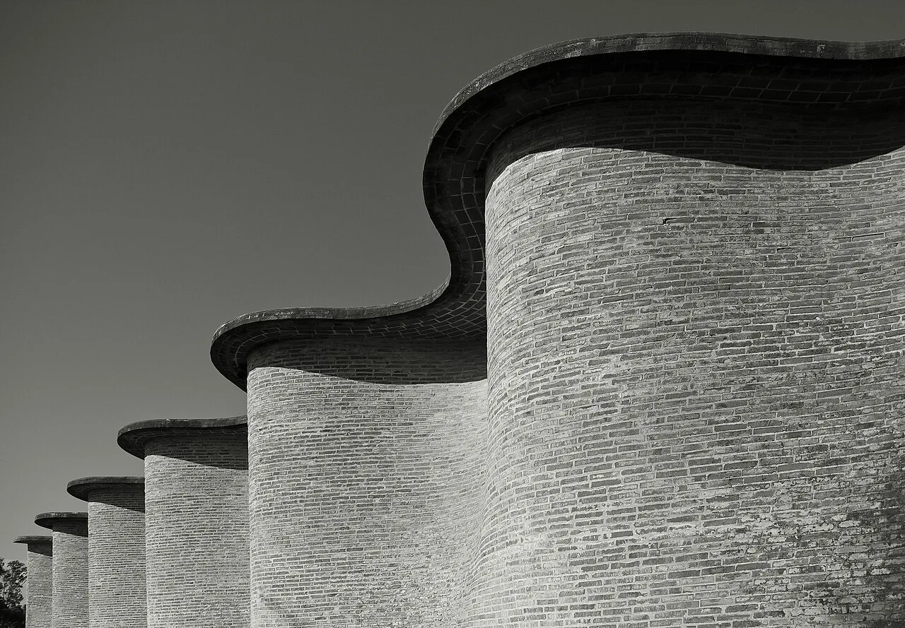
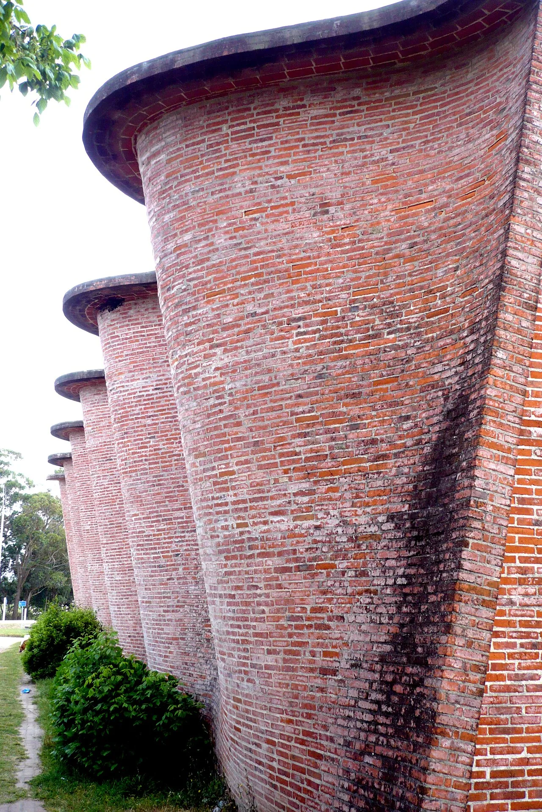

En una fotografía de la iglesia de Estación Atlántida, el muro parece moverse y la sombra explica por dónde. La curva cambia la orientación del ladrillo respecto de la luz; el borde superior conserva una continuidad que hace legible la ondulación. No hay que imaginar una tela petrificada para encontrar interés en esa superficie. Lo extraordinario es que una unidad pequeña y repetida participe en una geometría tan distinta de la pared recta que solemos asociar con ella.
La iglesia, obra de Eladio Dieste, fue inaugurada en 1960 en Estación Atlántida, Uruguay. La ficha de la UNESCO describe una nave con muros ondulados y bóvedas de cerámica armada, además de un campanario exento y un baptisterio subterráneo. Fue inscrita en la Lista del Patrimonio Mundial en 2021. Esa identificación permite separar la obra concreta de la imagen genérica de un ladrillo latinoamericano supuestamente espontáneo. Aquí hubo investigación técnica y cálculo. [1]
La evaluación de ICOMOS documenta la combinación de piezas cerámicas, mortero y armaduras metálicas. Por tanto, explicar la estructura como si fuera ladrillo sin más oculta una parte decisiva del sistema. La curva tampoco actúa como un adorno aplicado a una cubierta convencional: la geometría participa en el comportamiento resistente. Para comprenderlo hacen falta los documentos técnicos; una fotografía, por convincente que resulte, no permite deducir esfuerzos, espesores ni márgenes de seguridad. [2]


Esta diferencia importa en el debate sobre innovación. A veces se reserva la palabra para el material recién inventado o la maquinaria más visible. La obra de Dieste permite examinar otra posibilidad: modificar de manera sustancial lo que un sistema conocido puede hacer. Pero no conviene convertir esa posibilidad en una receta económica universal. Disponibilidad de mano de obra, control de ejecución, cálculo, transporte y mantenimiento cambian de un lugar a otro.
El aparejo deja ver una disciplina de repetición que la silueta monumental puede esconder. Cada hilada necesita participar en la continuidad del conjunto; los encuentros y los cambios de dirección exigen resolución. La obra no se agota en la idea del ingeniero. También requiere que el conocimiento pase a operaciones realizables y comprobables. Reconocer esa dimensión no permite atribuir nombres o condiciones laborales que las fuentes consultadas no documentan; obliga, precisamente, a investigarlos.
En las dos imágenes escogidas, la pared produce una lectura diferente al cambiar el punto de vista. Desde una posición se destaca la continuidad de las ondas; desde otra, la profundidad de los paños y el encuentro con la cubierta. El color del ladrillo varía también con el registro fotográfico. Es una advertencia pequeña pero útil: el aspecto material que circula en una publicación depende de la luz y de la cámara, además del edificio.
La condición religiosa añade una exigencia que una lectura puramente técnica podría perder. Una iglesia organiza reunión, atención y ritual. Su calidad no depende únicamente de que la estructura resulte ingeniosa. Importan la relación entre espacio común y focos de atención, los umbrales y la manera en que se recibe la luz. Sin haber estado allí, no corresponde describir una emoción acústica o lumínica como experiencia propia. Sí se puede preguntar cómo se articulan esas decisiones en la documentación.

.jpg){kind=link}
El baptisterio subterráneo permite introducir otro tiempo: el de conservar. En 2025, la UNESCO informó sobre un mecanismo de control de la capa freática relacionado con su preservación. El dato impide tratar la obra como una demostración técnica cerrada en 1960. Un edificio continúa enfrentando agua, cambios ambientales y necesidades de cuidado. La declaración patrimonial no elimina esa dependencia material. [3]
También por eso conviene ser cuidadosos con las promesas de sostenibilidad. El uso de cerámica o la eficiencia de una forma no bastan para calcular su impacto total. Habría que conocer cantidades, fabricación, transporte, vida útil y mantenimiento. El interés del proyecto no disminuye cuando dejamos de concederle prestaciones que no hemos medido. Al contrario: se vuelve posible reconocer con claridad qué inventó y qué preguntas permanecen abiertas.
La iglesia de Atlántida ofrece una forma exigente de mirar el diseño: seguir la relación entre una decisión geométrica y las condiciones que la hacen construible. La curva llama la atención, pero la continuidad del argumento está en el trabajo que permite sostenerla y cuidarla. Ese recorrido es más útil que copiar su contorno. Pide conocer el material lo suficiente como para descubrir qué puede hacer, sin fingir que lo hará solo.
Fuentes.
- UNESCO — Iglesia de Atlántida, obra del ingeniero Eladio Dieste
- ICOMOS — evaluación de la candidatura de la iglesia de Atlántida
- UNESCO — conservación del baptisterio y control de la capa freática, 13.03.2025
Interpretación de documentación patrimonial y de fotografías de 2011. No constituye una evaluación estructural ni una comprobación del estado actual del edificio.
Fuentes consultadas el 15.11.2026. Análisis e interpretación: RUMMOR. Edición privada para revisión.